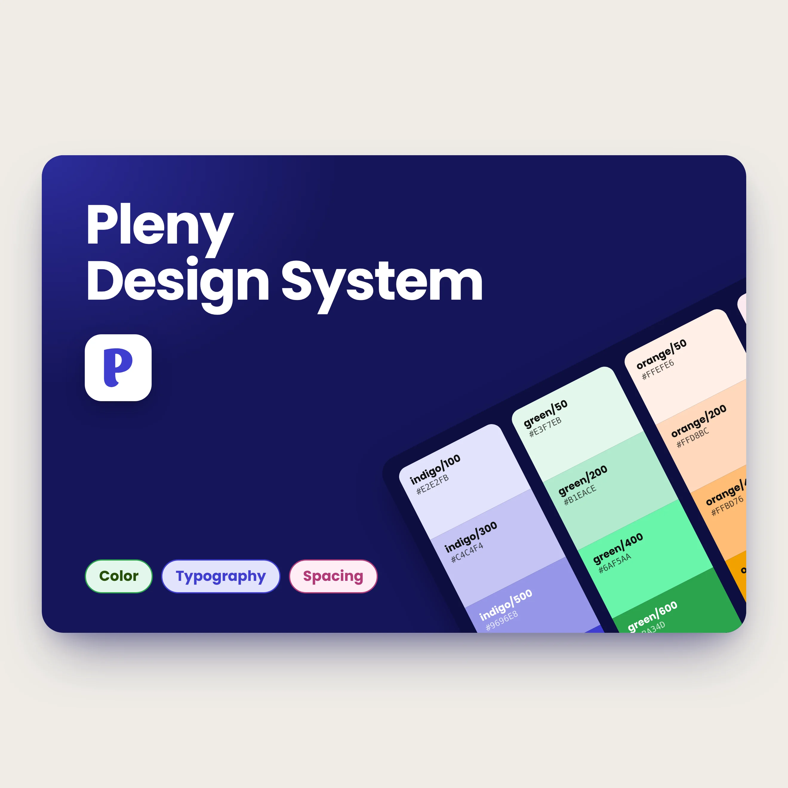
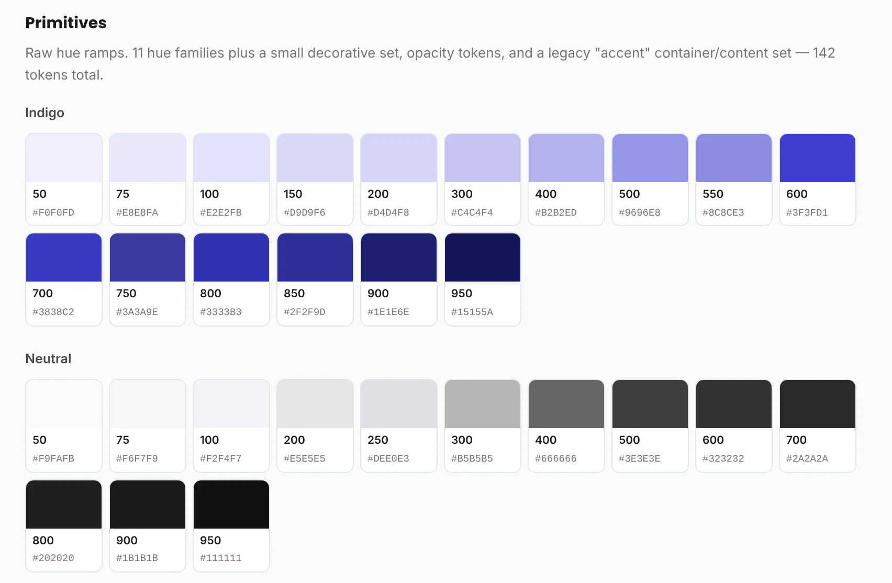
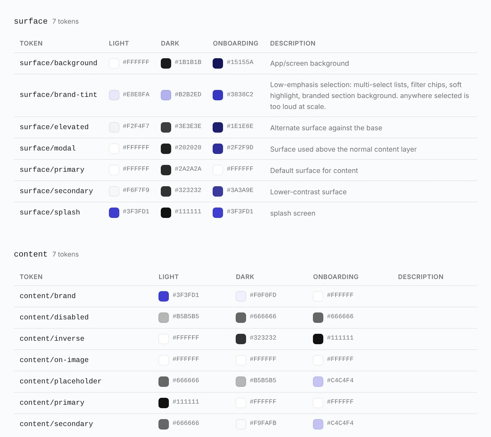
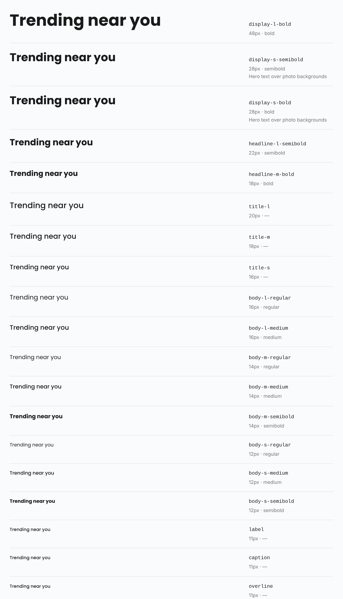
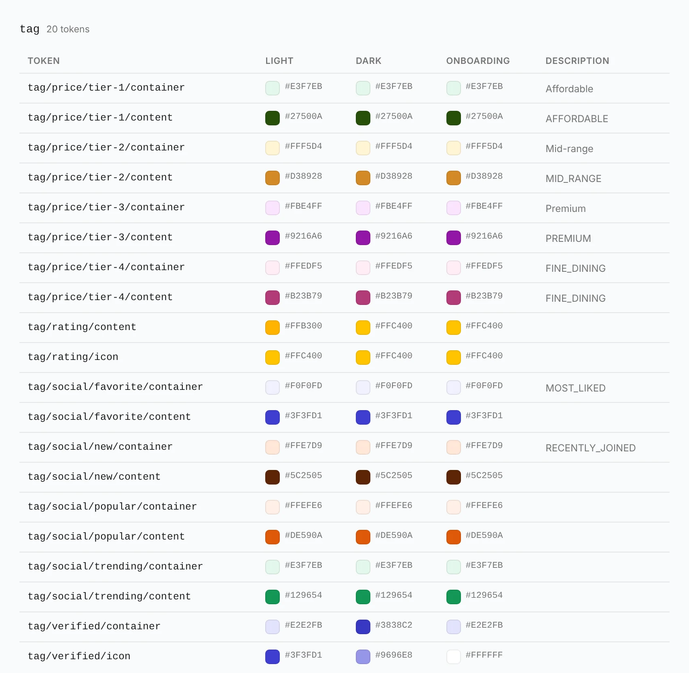
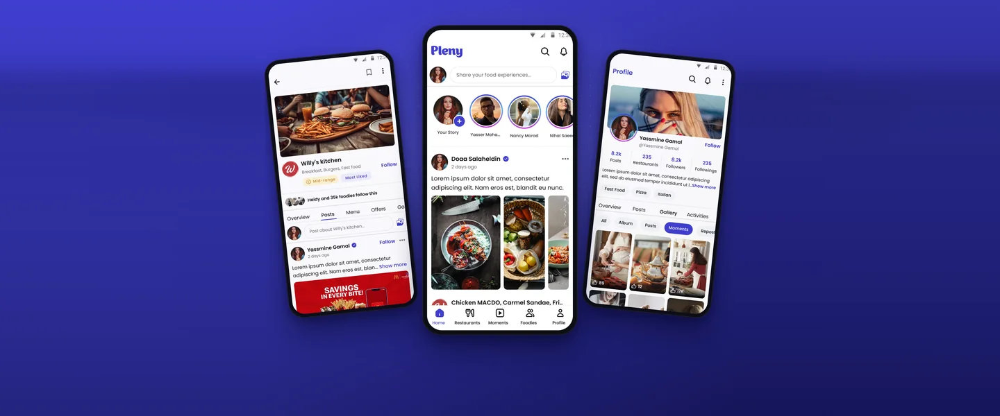

Rebuilding a food app's design system, without breaking the build
I led design at Pleny, a photo-first food social network, and restructured its Android design system: a new token architecture, a cleaner type and size scale, correct Material 3 elevation, and a standalone Onboarding theme.
The short version
- Restructured Pleny's Android design system into three token layers: primitive, semantic, component.
- Split semantic colors into background and foreground roles, so every surface has a matching content color.
- Added a standalone Onboarding theme next to Light and Dark, with its own gradient tokens and the same components.
- Settled 19 type roles in Poppins with an 11sp floor, a new size scale, and a 12dp page margin.
- Replaced off-spec shadows with Material 3's three-layer elevation.
- Ran it as a seven-round migration on a live app, with token names that match Jetpack Compose.
From raw colors to real screens






A social network where the food does the talking
Pleny wants to be the social network for foodies in MENA, live in Cairo, Alexandria, Dubai and Abu Dhabi. Think Instagram-style posting and following, mixed with restaurant discovery, trending dishes, recipes and creator recommendations.
The audience is Gen Z and Millennials who already live on Instagram and TikTok. In a food app the photos carry the experience, so the UI has one job: frame the food, then get out of the way.
A system that grew faster than its structure
The v1 design system worked, but every new screen made it harder to work with.
The real issue was grouping. Related values were scattered, so it felt bloated.
Names in Figma didn't match the code, so every handoff needed translating.
Safe-sounding names hid pairs that failed WCAG AA.
Elevation followed a two-layer shadow recipe from the community, and onboarding just borrowed Light mode, so the first impression looked like every other screen. And the app was live, so nothing could break along the way.
Three layers, seven rounds
I broke the revamp into a seven-round migration, one foundation at a time, so each round could ship and be checked before the next. Underneath it, a new three-layer token architecture:
green/800surface/backgroundTextField colorsThree rules kept a live migration safe:
Figma keeps a variable's ID on rename, so every component binding survived.
Old v1 tokens moved to a deprecated group until components were rebound.
Token names follow Compose APIs, so Figma reads like the code.
One foundation at a time
4A · ColorBackground and foreground roles
I restructured the semantic colors around two roles. Every color answers one question first: is it something you sit content on, or the content itself? Each background role has a matching foreground role, so pairs became predictable and contrast checks systematic.
I also checked contrast at the primitive level instead of trusting names, and added green/800, indigo/300, indigo/925 and indigo/950 where pairs failed. One example: green/700 on green/50 only reached about 3.4:1, under AA's 4.5:1.
19 roles, an 11sp floor
I settled 19 semantic roles, from display-l-bold down to overline, with letter spacing on every role. Poppins has a different x-height from Roboto, so sizes that read fine in Roboto felt small. That's where the 11sp floor comes from.
One margin, 12dp
I rebuilt the size scale and tested page margins against Instagram and LinkedIn. Both use one consistent margin, so Pleny does too: 12dp, tight enough to give photos the width they need.
4D · ElevationThree layers, the way M3 does it
Figma Variables can't hold shadows, so elevation lives in Effect Styles. I replaced the two-layer shadows with Material 3's three (umbra 20%, penumbra 14%, ambient 12%) and fixed component levels.
| Component | Level | Why |
|---|---|---|
| Feed card | 1 (max) | Photos carry the hierarchy, not shadows |
| Bottom sheet | 1 | Corrected to the M3 spec |
| Navigation bar | 2 | Corrected to the M3 spec |
A first impression of its own
Onboarding became its own mode, separate from Light and Dark, with its own gradient tokens. Because modes switch at the semantic layer, first-run screens get a more expressive look while reusing the same components as the rest of the app.
I previewed palettes and checked WCAG contrast before pushing anything to Figma, then turned that workflow into a reusable color strategist skill.

Two families, two shapes
Restaurants needed labels that read at a glance while scrolling. I designed two taxonomies with different shapes so they never get confused, then tested them in a real feed scroll, which surfaced a few color collisions I flagged before handoff.
Outlined pills
- Tokens
tag/price/tier-1→tier-4- Tells you
- What it'll cost
Filled pills
- Tokens
tag/social/*/container·/content- Tells you
- What people think
A nudge that doesn't block the feed
A dismissible banner asking people to sync contacts, designed around animation behavior, touch target size and accessibility.
The trade-offs that shaped it
Regroup before you delete. "Too many tokens" is usually a grouping problem. Auditing first separated real redundancy from things that only looked redundant.
Feed cards stay flat. Higher elevation would make cards pop, but on a photo-first feed it competes with the food.
Shape over color for badges. In a fast scroll, outlined versus filled reads faster than two close colors.
Don't rebuild what Android already does well. Native components for the generic parts left engineering time for what's unique to Pleny: discovery, creator tools and recommendations.
A migration nobody noticed, which was the point
Color, typography, size and elevation are done and mapped to Compose. The migration ran on a live app without breaking it. The Android team builds straight from the token maps instead of translating Figma names. Contrast is fixed in the primitives, so new screens start accessible. And onboarding got its own identity without a single new component.
- Color, type, size, elevation
- Onboarding theme
- Handed off with token maps
Check the real thing
- Check contrast at the primitive level. A safe-sounding name proves nothing.
- Renaming in place is the cheapest insurance a design system has.
- Test components where they live. Badges that looked distinct on a spec sheet collided in a feed.
- Plenty of community specs are wrong. M3 elevation has three shadow layers, not two.